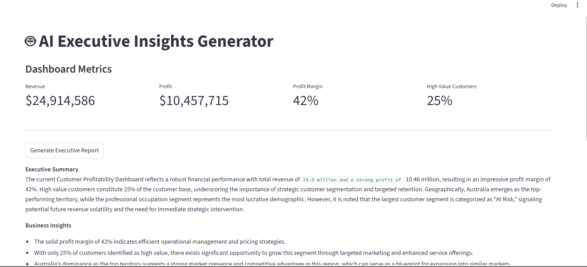
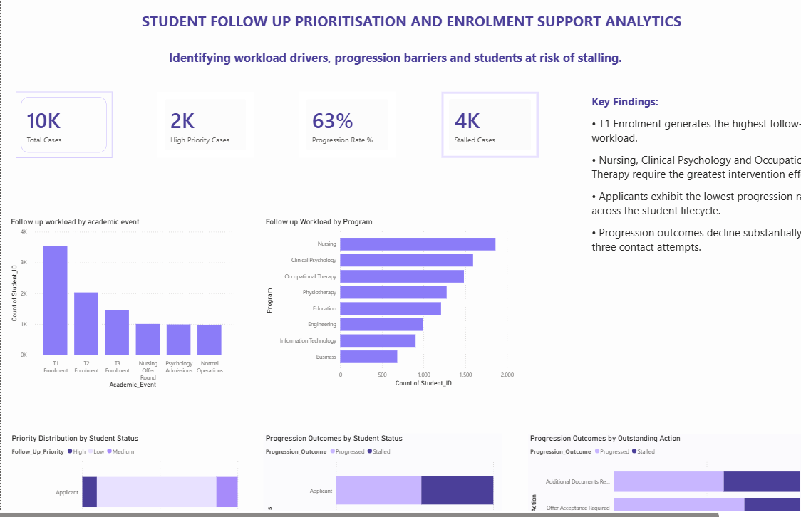

Featured Projects

AI-Powered Customer Profitability & Executive Insights Platform
Designed an end-to-end customer profitability analytics platform using PostgreSQL, SQL, Power BI, Python and Streamlit. Built a dimensional data warehouse and analysed $24.9M revenue, $10.5M profit and 17,400+ customers using profitability analysis, Customer Lifetime Value segmentation and RFM customer segmentation.
Key Insight
At-Risk customers represented the largest customer segment while High Value customers accounted for only 25% of the customer base, revealing significant retention opportunities.

Student Follow-Up Prioritisation & Enrolment Support Analytics
Analysed student progression behaviour using SQL, Power BI and predictive modelling. Developed dashboards and machine learning models to identify students requiring prioritised intervention.
Public Transport Patronage Recovery in Post-COVID Victoria
Investigated Victorian transport recovery trends between 2018 and 2025 using Tableau and SQL to identify long-term changes in commuter behaviour.

Australian Business Register Data Quality Assessment
Transformed hierarchical XML datasets into reporting-ready tables using Power Query. Developed Power BI dashboards to assess postcode completeness and identify data quality risks.